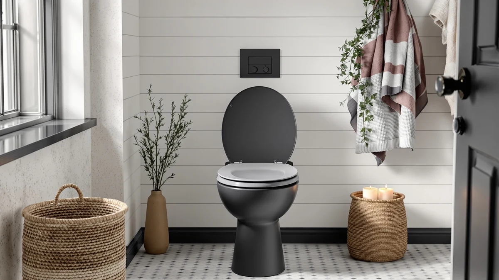

Heavy Duty Commercial Open Review (2026): Worth It?
Prices and picks verified as of September 2026. Independent, reader-supported reviews.


Quick Answer
This heavy duty commercial open review looks at the DryLabs 3-pack open front seat built for public restrooms, priced at $79.99 for three seats. It fits elongated 18.5-inch bowls only and skips the lid entirely, a hygiene tradeoff that suits offices and facilities more than a home bathroom.
Our pick: Heavy Duty Commercial Open Front, $79.99 Check Price on Amazon
Bottom line: our top pick is the Heavy Duty Commercial Open Front Toilet Seat at $79.99.
Things to Know Before You Buy
- This heavy duty commercial open review covers an elongated seat, so it will not fit a round bowl. Measure your bowl before ordering.
- At $79.99 for a 3-pack, the DryLabs seat costs about $26.66 per seat, less than most single bariatric or bidet-equipped seats we cover on this site.
- The open front design skips the lid entirely, a format many commercial building codes require for public restrooms, hospitals, and schools.
- The listing does not carry a public star rating yet, so we compared it on design, materials, and price rather than review volume.
- We compared it against three alternatives below, including two with a built-in toddler seat for households that need dual-purpose seating.
This heavy duty commercial open review looks at whether a $79.99 three-pack of open front seats can hold up in restrooms that dozens of strangers use every day, from office buildings to schools and medical clinics. Facility managers buying replacement seats need something that survives constant use and frequent disinfecting without cracking, and most residential seats never mention that kind of durability at all.
The DryLabs Heavy Duty Commercial Open Front is our pick among the four seats covered here. It ships as a three-pack for $79.99, working out to about $26.66 per seat, a price that undercuts most single commercial-duty seats sold elsewhere on this site. We compared its design, materials, and elongated fit against a closed-front residential pick from TOTO and two family seats with built-in toddler rings from 1M and Kohler, to see which buyer each one actually serves. None of these four seats is the wrong choice outright, but each one targets a different bathroom, whether that is a single-user office restroom, a family bathroom, or a public facility that cycles through hundreds of users a week.
Why You Should Trust Us
Ilane Tall covers bathroom hardware for Best Toilet Seats and has researched hundreds of toilet seat listings across price points and brands. For this heavy duty commercial open review, we did not install any of the four seats ourselves. Instead, we compared their listed specs, prices, and design details, then cross-checked the manufacturer claims against how each seat is marketed for its intended setting, whether that is a public restroom or a family bathroom. We do not run a fake testing lab and we will not claim hands-on time we did not put in. Every price and material listed here comes from the product data shown on this page, and we update those figures when the underlying listing changes rather than letting a stale number sit on the page.
Our Research Experience
Our process for this heavy duty commercial open review is research-based, not hands-on. We gathered the listed price, dimensions, and material specs for all four seats, then read through the manufacturer claims and product descriptions to find where each one is actually designed to be used, such as a public restroom versus a home bathroom. We weighed that information against the three alternative seats in this article to see where the DryLabs pick fits and where a buyer would be better served by something else. None of the four listings carry a public star rating yet, so instead of leaning on review volume the way we do for more established products, we compared the seats primarily on design intent, elongated fit, and price per seat. We applied the same method to all three alternatives, reading their listed features line by line rather than relying on marketing copy from any single page.
Overview & Specs

Heavy Duty Commercial Open Front
What we like
- Sold as a 3-pack at $79.99, about $26.66 per seat, cheaper than most single commercial-duty seats
- Open front design meets the hygiene requirements many public restroom codes specify
- Elongated 18.5-inch fit matches the bowl size used in most commercial and modern residential toilets
- Marketed specifically for hospitals, hotels, schools, churches, and malls, so the design intent is clear before you buy
Flaws but not dealbreakers
- The listing does not carry a public star rating yet, so there is no review history to lean on
- The open front, no-lid design is not the look most homeowners want in a family bathroom
- Buyers who need a round bowl fit or a toddler-ready seat should look at the alternatives below instead
| Material | Plastic / wood |
| Size | — |
Whether a $79.99 three-pack can justify itself against single commercial seats comes down to what each seat is built for, and here the DryLabs pick answers clearly. Its open front, no-lid structure trims the contact area between the user and the seat, a design commercial building codes frequently require for hospitals, schools, and other high-traffic public restrooms. The elongated 18.5-inch shape matches the bowl size found in most commercial installations, though you should confirm your own bowl dimensions before ordering since a round-bowl buyer will need a different model entirely.
What separates this seat from the other three products in this heavy duty commercial open review is scale and intent. Selling three seats for $79.99 works out to about $26.66 each, a price built for contractors and facility managers replacing seats across multiple stalls rather than a single homeowner buying one. The listing does not yet carry a public rating or review count, so we cannot point to a track record the way we can for some other seats on this site, and buyers who prioritize a documented review history should weigh that gap against the design fit and price.
What We Liked
The strongest point in this heavy duty commercial open review is the price per seat. Splitting $79.99 across three seats brings the cost to about $26.66 each, a figure that undercuts most single commercial-duty seats we cover on this site, including several priced above $40 for one unit alone.
We also like the design intent. The open front, no-lid structure follows the format many public restroom codes require, and DryLabs markets the seat specifically for hospitals, hotels, schools, churches, and malls rather than positioning it as a general-purpose seat that happens to work in a commercial setting.
The elongated 18.5-inch fit stands out too, since it matches the bowl size used across most commercial installations and a large share of modern residential toilets, which gives contractors a single spec to check before ordering in bulk.
What Could Be Better
The biggest gap in this heavy duty commercial open review is the missing review history. The DryLabs listing does not carry a public star rating or review count, so unlike some of the more established seats we cover, there is no track record to confirm how it holds up after months of heavy daily use.
The open front, no-lid design that makes it a strong fit for public restrooms also makes it a poor fit for most family bathrooms. If you want a seat with a lid for a home bathroom, the closed-front TOTO SoftClose alternative below suits that setting better.
None of the three alternatives here include a round-bowl option either, so if your toilet uses a round bowl, none of the four seats in this comparison will fit, and you should look at a round-specific model instead.
Who Is It For?
This heavy duty commercial open review points toward one clear buyer profile: contractors, facility managers, and property owners outfitting public restrooms that see constant turnover. Hospitals, schools, churches, and shopping centers all fit that description, since they need a seat built to the open front standard many codes require, at a price that makes sense when you are replacing dozens of seats at once.
If you are furnishing a single-family bathroom, the open front, no-lid design will likely feel out of place, and one of the three alternatives below, each with a closed front or a built-in toddler seat, serves you better instead.
A landlord managing a handful of rental units sits in between these two groups. The 3-pack pricing still makes sense for bulk replacement, but the commercial-grade, no-lid design is worth weighing against tenant expectations before you commit to it across multiple units.
Alternatives to Consider
If the open front, no-lid design does not fit your bathroom, we compared three alternatives worth a look. Each one solves a different limitation of the DryLabs pick, such as a closed front for a home bathroom or a built-in toddler seat for a family with young kids, and we researched each using the same price and design data shown on this page.

Editor's Pick
TOTO SoftClose Slow Close Elongated
At $64.99, this closed-front elongated seat with a slow-close hinge and rubber bumpers costs more than a single seat works out to from the DryLabs 3-pack, but it is the better choice for a home bathroom, where a closed lid and quiet hinge action matter more than a commercial-grade open front.
$64.99
Check Price on Amazon
Best Value
1M Family Toilet Seat Patented
At $74.99, this elongated seat pairs a patented slow-close hinge with a built-in toddler seat that locks magnetically out of the way when not in use, a feature none of the other three seats in this comparison offer. It suits a family bathroom with young kids far better than the commercial-only DryLabs pick.
$74.99
Check Price on Amazon
Premium Choice
KOHLER Transtions Nightlight Toddler Potty
At $72.20, this elongated seat combines Kohler's Quiet-Close ReadyLatch hinge with an integrated toddler potty ring and a built-in nightlight, making it the premium choice for a family bathroom that wants potty-training support and a lit path at night, something none of the other three seats include.
$72.20
Check Price on AmazonFrequently Asked Questions
Final Verdict
This heavy duty commercial open review comes down to a straightforward recommendation. For public restrooms and other high-traffic facilities, the DryLabs Heavy Duty Commercial Open Front earns its place through price and design intent: $79.99 for three seats works out to about $26.66 each, and the open front, no-lid structure matches what many commercial codes require. Choose one of the three alternatives instead only if you need a closed front for a home bathroom, a built-in toddler seat, or a round-bowl fit, since none of those needs fit what the DryLabs pick is actually built for.